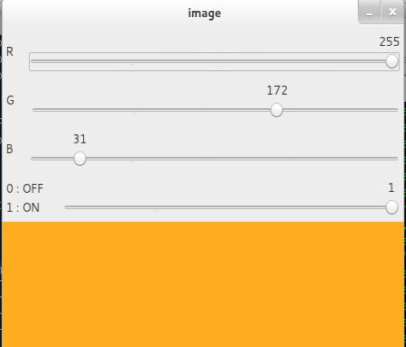

Trackbar as the Color Palette
Goal
- Learn to bind trackbar to OpenCV windows
- You will learn these functions : cv2.getTrackbarPos(), cv2.createTrackbar() etc.
Code Demo
Here we will create a simple application which shows the color you specify. You have a window which shows the color and three trackbars to specify each of B,G,R colors. You slide the trackbar and correspondingly window color changes. By default, initial color will be set to Black.
For cv2.getTrackbarPos() function, first argument is the trackbar name, second one is the window name to which it is attached, third argument is the default value, fourth one is the maximum value and fifth one is the callback function which is executed everytime trackbar value changes. The callback function always has a default argument which is the trackbar position. In our case, function does nothing, so we simply pass.
Another important application of trackbar is to use it as a button or switch. OpenCV, by default, doesn’t have button functionality. So you can use trackbar to get such functionality. In our application, we have created one switch in which application works only if switch is ON, otherwise screen is always black.
import cv2 import numpy as np def nothing(x): pass # Create a black image, a window img = np.zeros((300,512,3), np.uint8) cv2.namedWindow('image') # create trackbars for color change cv2.createTrackbar('R','image',0,255,nothing)cv2.createTrackbar('G','image',0,255,nothing) cv2.createTrackbar('B','image',0,255,nothing) # create switch for ON/OFF functionality switch = '0 : OFF \n1 : ON' cv2.createTrackbar(switch, 'image',0,1,nothing) while(1): cv2.imshow('image',img) k = cv2.waitKey(1) & 0xFF if k == 27: break # get current positions of four trackbars r = cv2.getTrackbarPos('R','image') g = cv2.getTrackbarPos('G','image') b = cv2.getTrackbarPos('B','image') s = cv2.getTrackbarPos(switch,'image') if s == 0: img[:] = 0 else: img[:] = [b,g,r] cv2.destroyAllWindows()
The screenshot of the application looks like below :
Exercises
- Create a Paint application with adjustable colors and brush radius using trackbars. For drawing, refer previous tutorial on mouse handling.